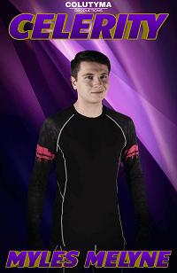
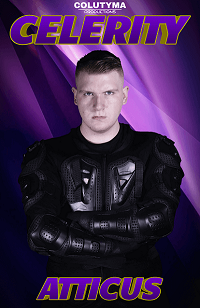
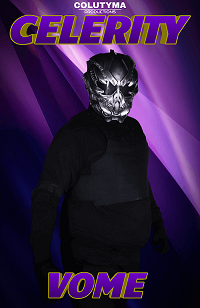
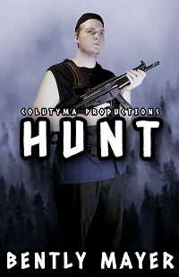
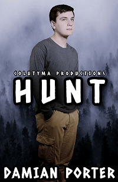
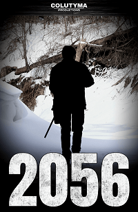

Synopsis
Many years in the future, a superpowered soldier named Myles Melyne will travel to the present day in order to escape his greatest threat, but the danger will come to him as Myles now needs to defend his new timeline and friends.
Main characters
  Myles was born over a thousand years in the future and was immediately selected for the Nova serum program at birth. Unlike most of the test subjects, Myles was compatible with the Nova serum, which gave him strength and unimaginable speed. His speed was unmatched, thus inheriting the name, Celerity.
Atticus, the adopted brother and former teammate of Myles Melyne, was also given the Nova serum at birth. Atticus was compatible with the serum and even gained the power of heat vision as a side effect. his undefeated strength helped him rise quickly in rank, eventually earning him the highest position of command in the enhanced soldier corp.
Vome is an exceptional soldier who harbors a fearsome grudge against Myles. He is well renowned for his lightning abilities as a result of the Nova serum he was given. Vome wears a striking grey mask that helps to keep himself alive after Myles mislead his squad into a trap. He was considered for the position of second in command, but was overruled by Atticus in favor of Myles. After these unfortunate incidents, Vome now awaits the day he can get his revenge against his former comrade Myles.
Synopsis
The Carleton Forest, a fantastic location for camping, hiking and sightseeing, has been closed off after many killings and missing persons reports started to increase rapidly in the area. Most believe it is the doing of the mythical creature known as bigfoot. It is up to Bentley Mayer and his team to track down and identify this beast and find the reasons for these mysterious attacks and put an end to the chaos once and for all.
Main characters
 Bentley Mayer is a former soldier and has had many jobs Since leaving the military, but this latest assignment is unlike anything he has ever done before. Following a string of attacks and killings in the Carleton Forest thought to be related to a mythical beast, Bentley will be in charge of the dangerous and haunting search for bigfoot.
Damion Porter is a renowned zoologist who has conducted numerous fruitful investigations on the habits of wildlife, and he is well recognized for his discovery of previously thought to be extinct animals. He is a grounded person who doesn't believe in folkloric creatures—that is, until events began to unfold during his mission with former soldier Bentley Mayer on their hunt for the elusive bigfoot.
Synopsis
The post-war world is a cold, harsh and merciless place, but not as deadly as the people within it. Blake, a survivor, will need to employ all of his his skills to find the one who wronged him.
Main characters
Born in the new war-torn world, Blake must continually fight for his life. He is an experienced survivalists, and will take any action necessary to survive among others who are desperately fighting for their lives.